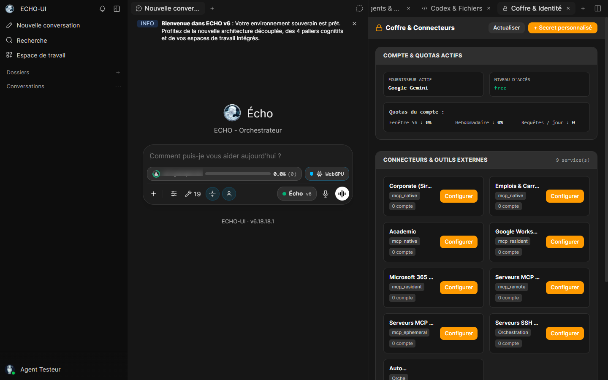

7. Écosystème HUD & UI
ECHO-UI repose sur une interface unifiée à écran partagé : plutôt que d'encombrer le fil de discussion avec des blocs interminables ou des fenêtres flottantes dispersées, chaque catégorie d'information (sous-agents, fichiers, navigateur web, identifiants chiffrés et applications) dispose de son propre onglet natif dans le panneau latéral droit, synchronisé en temps réel avec la conversation.
Confort de lecture et absence de vol de focus
Lorsque Écho lance une navigation web ou ouvre un fichier dans le Codex, l'onglet correspondant s'ouvre proprement en arrière-plan dans le panneau latéral sans interrompre votre frappe au clavier. Sur écran plus étroit, la barre de saisie se réorganise automatiquement sur deux rangées pour rester lisible.
1. Vue Partagée et Indicateurs Permanents (HUD)

Quatre indicateurs compacts restent visibles en permanence autour du compositeur et de la barre supérieure :
- Jauge de contexte et quotas : barre redimensionnable affichant l'occupation en pourcentage et ouvrant au clic le détail complet (cache, prompt actif, génération, compte Google et quotas 5h / hebdomadaire).
- Badge d'inférence locale (
WebGPU) : indique l'état du moteur local de vectorisation sur votre poste, directement dans la barre de saisie. - Indicateur de sous-agents : situé en haut à droite, il signale l'activité cognitive en cours et bascule d'un clic vers l'onglet Sous-Agents & Outils.
- Boîte de réception et compteur d'onglets : un badge affiche le nombre d'onglets ouverts sur le panneau latéral ; le panneau de notifications permet de supprimer un avis précis ou de tout effacer d'un clic.
2. Les Cinq Onglets Natifs et le Terminal
| Onglet | Usage principal | Contrôles directs disponibles |
|---|---|---|
| Sous-Agents & Outils | Suivi en direct des experts, Conseils (tables rondes) et ouvriers supervisés. | Onglets par rôle, filtre Ce groupe / Tous, pause d'affichage locale, actions Pause / Reprendre (+N tours) / Stop / Fermer, messagerie directe @nom ou 📢 Tous. |
| Codex & Fichiers | Exploration et édition des fichiers de la session ou d'autres conversations (en lecture seule). | Espaces main, plans, generated, sandbox, files ; prévisualisation multi-format ; éditeur avec Ctrl+S ; édition assistée par IA ; historique et diff ; Importer / Exporter / Copier / Imprimer ; action Envoyer au Codex depuis les blocs de code du chat. |
| Navigateur Web | Observation en temps réel et relecture des navigations web autonomes. | Flux 🔴 EN DIRECT avec curseur, navigation temporelle DVR, lecture/export de clips MP4, bouton 📌 Conserver, zoom, recadrage 8 poignées et export PNG. |
| Coffre & Identité | Gestion sécurisée des clés d'accès, comptes et connecteurs externes. | Catalogue de connecteurs avec guides dépliables, statut masqué des comptes actifs, ajout, modification et suppression chiffrée. |
| Applications | Affichage de graphiques dynamiques et d'applications web interactives générées pour vous. | Pastille d'état (Actif / Arrêté), bouton explicite Arrêter et fermeture ×, dans un cadre isolé sans accès à vos cookies. |
| Terminal | Console shell interactive isolée dans le bac à sable de la session. | Ouverture via + → Nouveau terminal dès que la conversation est sauvegardée. |
3. Cartes Interactives, Son et Réglages
- Cartes interactives dans la discussion : lorsqu'Écho a besoin d'une précision ou d'un choix avant de poursuivre, elle affiche une carte interactive dédiée (saisie libre, choix rapides, confirmation Oui/Non ou questionnaire multi-étapes accompagné d'un compte à rebours visible).
- Identité sonore et mode vocal : ECHO-UI intègre un signal d'ouverture discret, une tonalité de notification dédiée, la dictée vocale au micro et le mode appel vocal complet en français.
-
Réglages personnels unifiés (9 onglets) : accessibles via le menu profil ou la commande
/reglages(Général, Interface, Notifications, Raccourcis, Audio, Contrôle des données, Conversations archivées, Compte avec sélecteur de genre grammatical et avatar assorti, À propos). Les paramètres système globaux sont regroupés dans Administration → Réglages.
Précautions d'usage dans le panneau latéral
Fermer un onglet Applications avec la croix × retire l'application active et
libère son exécution associée. De même, pour consulter les fichiers d'une ancienne conversation sans risquer de
modifier la vôtre, utilisez le sélecteur de conversation en haut de Codex & Fichiers (mode
lecture seule automatique).
Dossier d'Ingénierie : Gestionnaire de Fenêtres (WM), WebSocket, Proxy App & Routeurs
1. Bus Temps Réel & Window Manager (routers/wm.py & echo_window_manager.py)
- WebSocket unifié (
/echo/v1/wm/ws) : Authentifié par handshake First-Message Auth ({"type": "auth"}, aucun JWT dans l'URL) viaauthenticate_echo_websocket(http_utils.py), avec keepalive20s, RPC full-duplex (rpc/rpc_ack, timeout10 000 ms) et reconnexion côté client à backoff exponentiel (1 000 msà8 000 ms+ jitter). - Proxy applicatif ticketé HMAC (
/echo/v1/wm/app/{ticket}) : Sert les applications client-serveur de l'onglet Applications (EchoCanvasTab.svelte) sans cookie SSO (suppression deCookie/Authorization/X-Webui-*), sous CSP sandbox strict (ECHO_IFRAME_SANDBOXsansallow-same-origin), relais WebSocket full-duplex viaaiohttpet injection d'un shim HTML autonome (_inject_app_proxy_html_shimavec polyfilllocalStorage/sessionStorageen mémoire). - Webhook Sandbox & UCTP : Les événements des applications sandbox (
frame_upsert,run_finished) transitent parPOST /echo/v1/wm/internal/sandbox_eventsigné par HMAC-SHA256. Le transport UCTP (echo_events.py) opère en double canal non-destructif (Socket.IO natif +wm_uctp_chunk/wm_uctp_execpar fragments de256 Ko).
2. Routeurs Spécialisés & Intégration SvelteKit (16-docker-echo-webui)
routers/cognition.py(v6.16.0.1) : Snapshot lecture seule/{chat_id}/snapshot, flux SSE/{chat_id}/streampiloté parget_cognition_seq, flux WebSocket binaire/{chat_id}/browser-ws(header 16 octets Big-Endian!BBHHHHIH+ JPEG), clips/clip, rétention/retainet pilotage/message//control.routers/codex.py(v6.18.18.1) : Opérations Git Dulwich déportées viaasyncio.to_threadsous verrouget_codex_lock, édition CodeMirror 6 (EchoCodexEditor.svelte+codexLanguages.ts), téléchargement avec MIME IANA +X-Content-Type-Options: nosniffet défense XSS (application/octet-streampour HTML/SVG).routers/embeds.py&FullHeightIframe.svelte: Externalisation des embeds et binaires viaecho-embed://etecho-asset://avec pontpostMessage(echo:fetch-asset→echo:asset-blob).- Découplage DB en vol & Composants UI : Les écritures intermédiaires passent par
ChatMessage(sync_chat_blob=False) jusqu'au scellement final du tour ; les interactions utilisateur passent parAskUserCard.svelte(request:user_input) et les notifications parInboxPanel.svelte/routers/notifications.py.